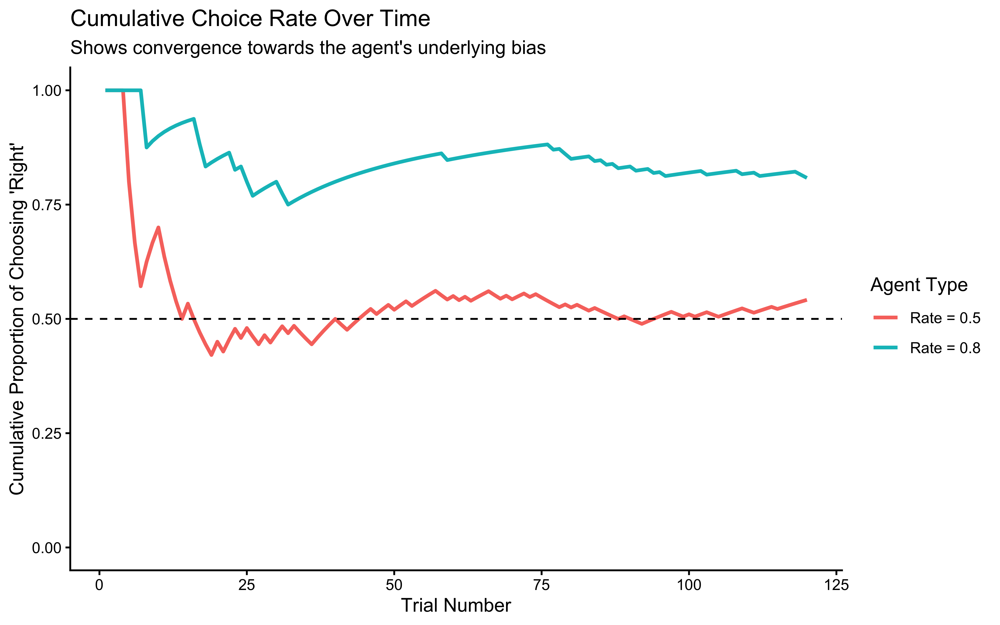
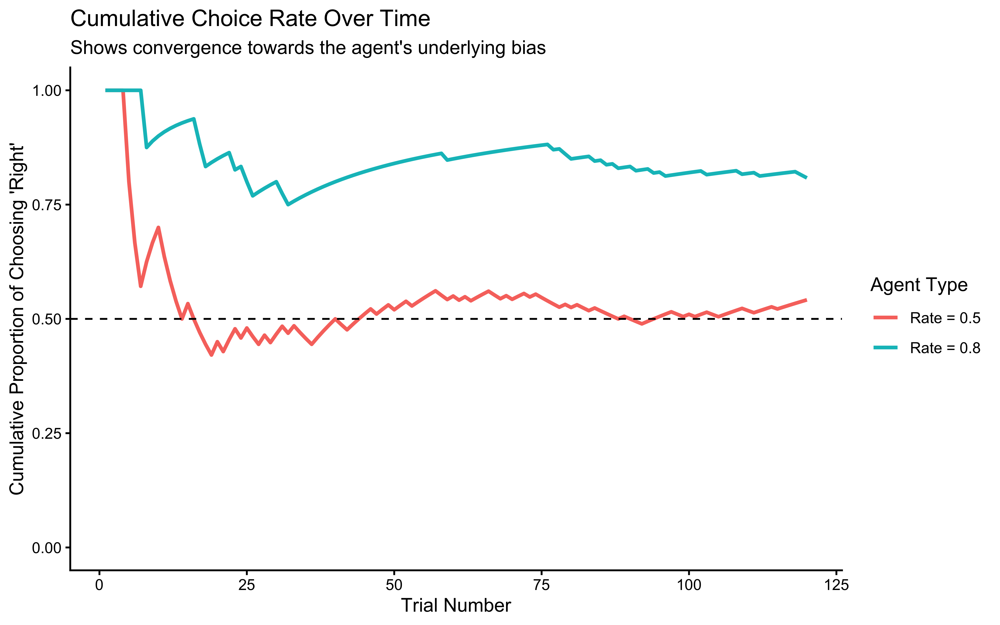

Chapter 5 From verbal descriptions to formal models
This chapter bridges the gap between verbal theories and computational implementations of cognitive models. Building on our observations of the matching pennies game, we now develop precise mathematical formulations that can generate testable predictions.
5.1 Learning Goals
This chapter focuses on translating the verbal theories from Chapter 2 into concrete, testable computational models. After completing this chapter, you will be able to:
- Formalize Verbal Models: Translate abstract strategy descriptions (like “Random Choice” or “Win-Stay-Lose-Shift”) into precise algorithms and implement them as R functions.
- Implement Agent-Based Simulations: Create simple software “agents” that execute these strategies within a simulated environment (the Matching Pennies game).
- Understand Simulation’s Role: Use simulation to explore the behavioral consequences of different model assumptions and parameters before fitting models to real data.
- Analyze Simulated Behavior: Generate and visualize simulation data to understand how different strategies perform and interact under controlled conditions.
- Prepare for Model Fitting: Appreciate why simulating models is a crucial step prior to estimating parameters from empirical data (covered in Chapter 4).
5.2 The Value of Formalization and Simulation
Moving from the verbal models discussed in Chapter 2 to formal, computational models is a critical step in cognitive science. Verbal descriptions often hide ambiguity – what does “tend to repeat” or “track patterns” precisely mean? Formalization forces us to be explicit.
1. Formalization forces clarity: * Translating ideas into code or math requires specifying exact rules, parameters, and information processing steps. This often reveals hidden assumptions or underspecified aspects of the verbal theory.
2. Computational implementation enables simulation: * Once formalized, we can create computational agents that act out the strategy. * Simulation allows us to: * Understand Emergent Behavior: See the consequences of our model’s rules over many trials or interactions. Does the strategy lead to expected patterns? Are there surprising outcomes? * Explore Parameter Space: How does behavior change if we alter a model parameter (e.g., the bias in a random agent, or the stay probability in WSLS)? * Generate Testable Predictions: What specific behavioral patterns (e.g., choice sequences, reaction times - though not modeled here) does the model predict under different conditions? These predictions can then be compared to real data. * Debug Model Logic: Does the simulated behavior make sense? If not, it might indicate a flaw in our formalization of the verbal theory.
In this chapter, we will walk through this process:
- Formalize: Define precise algorithms for two key strategies from Chapter 2 (Random Choice and WSLS).
- Implement: Code these algorithms as reusable R functions.
- Simulate: Run these agents against different types of opponents (a biased random agent, another WSLS agent).
- Scale & Analyze: Simulate many agents to understand average behavior and visualize the results to compare strategy effectiveness.
5.4 Implementing a Random Agent
Our simplest model from Chapter 2 was the Random Choice agent. It assumes choices are independent of history and context, potentially with a fixed bias.
Algorithm: On each trial, choose option 1 (‘right’, coded as 1) with probability rate, otherwise choose option 0 (‘left’, coded as 0).
Let’s implement this and visualize its behavior.
# --- Simulation Parameters ---
trials <- 120 # Number of trials for a single simulation run
# set.seed(123) # Uncomment for reproducible random choices
# --- Basic Implementation ---
# Simulate an unbiased random agent (rate = 0.5)
rate_unbiased <- 0.5
choices_unbiased <- rbinom(trials, size = 1, prob = rate_unbiased)
# rbinom generates random draws from a binomial distribution.
# size = 1 makes it a Bernoulli trial (0 or 1 outcome).
# prob = rate specifies the probability of getting a 1.
# Simulate a biased random agent (rate = 0.8, chooses 'right' 80% of the time)
rate_biased <- 0.8
choices_biased <- rbinom(trials, size = 1, prob = rate_biased)
# --- Visualization 1: Raw Choices ---
# Create data frames for plotting
d_unbiased <- tibble(trial = 1:trials, choice = choices_unbiased, rate = rate_unbiased)
d_biased <- tibble(trial = 1:trials, choice = choices_biased, rate = rate_biased)
# Plot raw choice sequence (0s and 1s)
p1 <- ggplot(d_unbiased, aes(x = trial, y = choice)) +
geom_line(color = "blue") + geom_point(color = "blue", size = 1) +
labs(title = "Unbiased Random Agent (Rate = 0.5)", y = "Choice (0/1)") + theme_classic() + ylim(-0.1, 1.1)
p2 <- ggplot(d_biased, aes(x = trial, y = choice)) +
geom_line(color = "red") + geom_point(color = "red", size = 1) +
labs(title = "Biased Random Agent (Rate = 0.8)", y = "Choice (0/1)") + theme_classic() + ylim(-0.1, 1.1)
# Show plots side-by-side
print(p1 + p2 + plot_layout(guides = "collect"))
print("This first visualization shows the behavior of a purely random agent - one that chooses between options with equal probability (rate = 0.5). Looking at the jagged line jumping between 0 and 1, we can see that the agent's choices appear truly random, with no discernible pattern. This represents what we might expect from a player who is deliberately trying to be unpredictable in the matching pennies game.
However, this raw choice plot can be hard to interpret. A more informative way to look at the agent's behavior is to examine how its average rate of choosing option 1 evolves over time:")## [1] "This first visualization shows the behavior of a purely random agent - one that chooses between options with equal probability (rate = 0.5). Looking at the jagged line jumping between 0 and 1, we can see that the agent's choices appear truly random, with no discernible pattern. This represents what we might expect from a player who is deliberately trying to be unpredictable in the matching pennies game.\nHowever, this raw choice plot can be hard to interpret. A more informative way to look at the agent's behavior is to examine how its average rate of choosing option 1 evolves over time:"# --- Visualization 2: Cumulative Rate ---
# Calculate the cumulative proportion of 'right' choices (1s)
d_unbiased <- d_unbiased %>% mutate(cumulative_rate = cumsum(choice) / row_number())
d_biased <- d_biased %>% mutate(cumulative_rate = cumsum(choice) / row_number())
# Combine data for comparison plot
d_combined <- bind_rows(d_unbiased, d_biased) %>%
mutate(Agent = paste("Rate =", rate))
# Plot cumulative rates
p3 <- ggplot(d_combined, aes(x = trial, y = cumulative_rate, color = Agent)) +
geom_line(size = 1) +
geom_hline(yintercept = 0.5, linetype = "dashed", color = "black") + # Reference line for 50%
ylim(0, 1) +
labs(
title = "Cumulative Choice Rate Over Time",
subtitle = "Shows convergence towards the agent's underlying bias",
x = "Trial Number",
y = "Cumulative Proportion of Choosing 'Right'",
color = "Agent Type"
) +
theme_classic()
print(p3)
print("We can clearly see how bias affects choice behavior. The unbiased agent (rate = 0.5) stabilizes around choosing each option equally often, while the biased agent (rate = 0.8) shows a strong preference for option 1, choosing it approximately 80% of the time. This comparison helps us understand how we might detect biases in real players' behavior - consistent deviation from 50-50 choice proportions could indicate an underlying preference or strategy.")## [1] "We can clearly see how bias affects choice behavior. The unbiased agent (rate = 0.5) stabilizes around choosing each option equally often, while the biased agent (rate = 0.8) shows a strong preference for option 1, choosing it approximately 80% of the time. This comparison helps us understand how we might detect biases in real players' behavior - consistent deviation from 50-50 choice proportions could indicate an underlying preference or strategy." 

5.4.1 Encapsulating the Agent in a Function
To make our agent reusable, we’ll wrap the logic in a function. This is good practice for building more complex simulations.
#' Random Agent Function
#'
#' Generates a sequence of choices based on a fixed probability (rate).
#' Includes optional noise causing random 50/50 choices.
#'
#' @param n_trials Integer, the number of choices to generate.
#' @param rate Numeric, the probability (0-1) of choosing option 1 ('right').
#' @param noise Numeric, the probability (0-1) of making a random 50/50 choice
#' instead of following the rate. Default is 0 (no noise).
#'
#' @return A numeric vector of choices (0s and 1s).
#'
RandomAgent_f <- function(n_trials, rate = 0.5, noise = 0) {
# Input validation
if (!is.numeric(rate) || rate < 0 || rate > 1) {
stop("Rate must be a probability between 0 and 1.")
}
if (!is.numeric(noise) || noise < 0 || noise > 1) {
stop("Noise must be a probability between 0 and 1.")
}
# Generate base choices according to the rate
choices <- rbinom(n_trials, size = 1, prob = rate)
# Apply noise: identify trials where noise occurs
noise_trials <- rbinom(n_trials, size = 1, prob = noise) == 1
# Replace choices with random 50/50 on noise trials
if (any(noise_trials)) {
choices[noise_trials] <- rbinom(sum(noise_trials), size = 1, prob = 0.5)
}
return(choices)
}
# Example usage:
example_choices <- RandomAgent_f(n_trials = 10, rate = 0.7, noise = 0.1)
print(paste("Example choices (rate=0.7, noise=0.1):", paste(example_choices, collapse=" ")))## [1] "Example choices (rate=0.7, noise=0.1): 0 0 0 1 0 1 1 1 1 0"5.5 Implementing a Win-Stay-Lose-Shift (WSLS) Agent
The WSLS strategy (Chapter 2) reacts to the immediate past: repeat a winning choice, switch after a loss.
Algorithm:
1. Make an initial choice (e.g., randomly).
2. On trial t > 1:
a. Determine feedback from trial t-1 (win or loss).
b. If win: choose the same action as trial t-1.
c. If loss: choose the opposite action from trial t-1.
3. Add optional noise: with probability noise, make a random 50/50 choice instead.
Implementing the WSLS Function
#' Win-Stay-Lose-Shift Agent Function
#'
#' Determines the next choice based on the previous choice and its outcome (feedback).
#' Includes optional noise.
#'
#' @param prevChoice Numeric, the agent's choice on the previous trial (0 or 1).
#' @param feedback Numeric, the outcome of the previous trial (1 for win, 0 for loss).
#' @param noise Numeric, the probability (0-1) of making a random 50/50 choice. Default is 0.
#'
#' @return Numeric, the agent's next choice (0 or 1).
#'
WSLSAgent_f <- function(prevChoice, feedback, noise = 0) {
# Input validation
if (!prevChoice %in% c(0, 1)) stop("Previous choice must be 0 or 1.")
if (!feedback %in% c(0, 1)) stop("Feedback must be 0 or 1.")
if (!is.numeric(noise) || noise < 0 || noise > 1) stop("Noise must be a probability between 0 and 1.")
# Core WSLS logic:
# If feedback is 1 (win), stay: choice = prevChoice
# If feedback is 0 (loss), shift: choice = 1 - prevChoice
choice <- ifelse(feedback == 1, prevChoice, 1 - prevChoice)
# Apply noise if specified
if (noise > 0 && runif(1) < noise) {
# Override with a random 50/50 choice
choice <- sample(c(0, 1), 1)
}
return(choice)
}
# Example usage:
# Won previous trial (feedback=1) after choosing 1:
print(paste("Next choice after win (chose 1):", WSLSAgent_f(prevChoice = 1, feedback = 1)))## [1] "Next choice after win (chose 1): 1"# Lost previous trial (feedback=0) after choosing 1:
print(paste("Next choice after loss (chose 1):", WSLSAgent_f(prevChoice = 1, feedback = 0)))## [1] "Next choice after loss (chose 1): 0"5.5.1 Simulating WSLS vs. Opponents
Now, let’s simulate our WSLS agent playing against different opponents to see how it performs.
# --- Simulation Setup ---
trials <- 120
# set.seed(456) # Uncomment for reproducible simulation runs
# --- Simulation 1: WSLS vs. Biased Random Agent ---
cat("Simulating WSLS vs. Biased Random (Rate = 0.8)...\n")## Simulating WSLS vs. Biased Random (Rate = 0.8)...# Opponent always chooses 'right' with 80% probability
opponent_choices_biased <- RandomAgent_f(n_trials = trials, rate = 0.8, noise = 0)
# Initialize vectors for WSLS agent
wsls_choices_vs_biased <- rep(NA, trials)
feedback_vs_biased <- rep(NA, trials)
# First choice is random
wsls_choices_vs_biased[1] <- sample(c(0, 1), 1)
# Simulation loop
for (t in 2:trials) {
# Determine feedback from previous trial (WSLS wins if choices match opponent)
# Note: In Matching Pennies, win condition depends on role (Matcher/Hider).
# Here we assume the WSLS agent is the 'Matcher' for simplicity.
prev_feedback <- ifelse(wsls_choices_vs_biased[t-1] == opponent_choices_biased[t-1], 1, 0)
feedback_vs_biased[t-1] <- prev_feedback # Store feedback for analysis
# WSLS agent makes choice based on previous feedback
wsls_choices_vs_biased[t] <- WSLSAgent_f(
prevChoice = wsls_choices_vs_biased[t-1],
feedback = prev_feedback,
noise = 0 # Assuming no noise for this simulation
)
}
# Record feedback for the last trial
feedback_vs_biased[trials] <- ifelse(wsls_choices_vs_biased[trials] == opponent_choices_biased[trials], 1, 0)
# Create dataframe for analysis
df_vs_biased <- tibble(
trial = 1:trials,
Self_WSLS = wsls_choices_vs_biased,
Opponent_Random = opponent_choices_biased,
Feedback = feedback_vs_biased # 1 if WSLS won
) %>% mutate(
Cumulative_Performance = cumsum(Feedback) / row_number()
)
# --- Simulation 2: WSLS vs. WSLS ---
# (Opponent plays WSLS but tries to mismatch - feedback is inverted)
cat("Simulating WSLS vs. WSLS...\n")## Simulating WSLS vs. WSLS...wsls1_choices <- rep(NA, trials)
wsls2_choices <- rep(NA, trials)
feedback_wsls1 <- rep(NA, trials) # Feedback for agent 1
wsls1_choices[1] <- sample(c(0, 1), 1)
wsls2_choices[1] <- sample(c(0, 1), 1)
for (t in 2:trials) {
# Feedback for agent 1 from previous trial (wins if match)
prev_feedback1 <- ifelse(wsls1_choices[t-1] == wsls2_choices[t-1], 1, 0)
feedback_wsls1[t-1] <- prev_feedback1
# Feedback for agent 2 (opponent) is the opposite (wins if mismatch)
prev_feedback2 <- 1 - prev_feedback1
# Both agents choose based on their own previous feedback
wsls1_choices[t] <- WSLSAgent_f(wsls1_choices[t-1], prev_feedback1, noise = 0)
wsls2_choices[t] <- WSLSAgent_f(wsls2_choices[t-1], prev_feedback2, noise = 0)
}
feedback_wsls1[trials] <- ifelse(wsls1_choices[trials] == wsls2_choices[trials], 1, 0)
# Create dataframe
df_vs_wsls <- tibble(
trial = 1:trials,
Self_WSLS = wsls1_choices,
Opponent_WSLS = wsls2_choices,
Feedback = feedback_wsls1 # 1 if Self_WSLS won
) %>% mutate(
Cumulative_Performance = cumsum(Feedback) / row_number()
)
# --- Visualize Simulation Results ---
# Plot choices over time
p_choices_biased <- ggplot(df_vs_biased, aes(x = trial)) +
geom_line(aes(y = Self_WSLS, color = "WSLS Agent")) +
geom_line(aes(y = Opponent_Random + 0.05, color = "Biased Opponent"), linetype = "dashed") + # Offset slightly
labs(title = "WSLS vs. Biased Random", y = "Choice (0/1)") + theme_classic() + ylim(-0.1, 1.1)
p_choices_wsls <- ggplot(df_vs_wsls, aes(x = trial)) +
geom_line(aes(y = Self_WSLS, color = "WSLS Agent 1")) +
geom_line(aes(y = Opponent_WSLS + 0.05, color = "WSLS Agent 2"), linetype = "dashed") + # Offset slightly
labs(title = "WSLS vs. WSLS", y = "Choice (0/1)") + theme_classic() + ylim(-0.1, 1.1)
# Plot cumulative performance
p_perf_biased <- ggplot(df_vs_biased, aes(x = trial, y = Cumulative_Performance)) +
geom_line(color = "blue", size = 1) + geom_hline(yintercept = 0.5, linetype = "dashed") +
labs(title = "WSLS Performance vs. Biased Random", y = "Proportion Wins") + theme_classic() + ylim(0, 1)
p_perf_wsls <- ggplot(df_vs_wsls, aes(x = trial, y = Cumulative_Performance)) +
geom_line(color = "purple", size = 1) + geom_hline(yintercept = 0.5, linetype = "dashed") +
labs(title = "WSLS Performance vs. WSLS", y = "Proportion Wins") + theme_classic() + ylim(0, 1)
# Arrange plots
print((p_choices_biased | p_choices_wsls) / (p_perf_biased | p_perf_wsls) +
plot_layout(guides = "collect") & theme(legend.position = "bottom"))
print("This cumulative performance plot reveals the overall effectiveness of the WSLS strategy. By tracking the running average of successes, we can see whether the strategy leads to above-chance performance in the long run. When playing against a biased random opponent, the WSLS agent can potentially exploit the opponent's predictable tendencies, though success depends on how strong and consistent the opponent's bias is.
When we pit the WSLS agent against another WSLS agent, the dynamics become more complex. Both agents are now trying to adapt to each other's adaptations, creating a more sophisticated strategic interaction. The resulting behavior often shows interesting patterns of mutual adaptation, where each agent's attempts to exploit the other's strategy leads to evolving patterns of play.")## [1] "This cumulative performance plot reveals the overall effectiveness of the WSLS strategy. By tracking the running average of successes, we can see whether the strategy leads to above-chance performance in the long run. When playing against a biased random opponent, the WSLS agent can potentially exploit the opponent's predictable tendencies, though success depends on how strong and consistent the opponent's bias is.\nWhen we pit the WSLS agent against another WSLS agent, the dynamics become more complex. Both agents are now trying to adapt to each other's adaptations, creating a more sophisticated strategic interaction. The resulting behavior often shows interesting patterns of mutual adaptation, where each agent's attempts to exploit the other's strategy leads to evolving patterns of play."5.6 Scaling Up: Simulating Multiple Agents
To understand the average behavior and robustness of the WSLS strategy, we need to simulate many agents playing against opponents with varying biases.
Refactoring Simulation into a Function
First, let’s create a function that runs one simulation (one WSLS agent vs. one opponent) and returns the results. This avoids repeating code.
#' Run Matching Pennies Simulation
#'
#' Simulates one agent playing Matching Pennies against an opponent
#' for a specified number of trials.
#'
#' @param n_trials Integer, number of trials.
#' @param wsls_params List, parameters for the WSLS agent (alpha, betaWin, betaLose, noise).
#' @param opponent_type String, "Random" or "WSLS".
#' @param opponent_params List, parameters for the opponent agent.
#' For Random: list(rate, noise).
#' For WSLS: list(alpha, betaWin, betaLose, noise).
#'
#' @return A tibble with trial-by-trial choices and outcomes.
#'
run_simulation <- function(n_trials, wsls_params, opponent_type, opponent_params) {
# Initialize choices and feedback
wsls_choices <- rep(NA, n_trials)
opponent_choices <- rep(NA, n_trials)
wsls_feedback <- rep(NA, n_trials) # Feedback for WSLS agent (1=win)
wsls_win_signal <- rep(0, n_trials) # +1/-1 if won, 0 if lost
wsls_lose_signal <- rep(0, n_trials) # +1/-1 if lost, 0 if won
# First trial choices
wsls_choices[1] <- sample(c(0, 1), 1)
if (opponent_type == "Random") {
opponent_choices[1] <- RandomAgent_f(1, opponent_params$rate, opponent_params$noise)
} else { # Opponent is WSLS
opponent_choices[1] <- sample(c(0, 1), 1)
}
# Loop through remaining trials
for (t in 2:n_trials) {
# Determine feedback from t-1 (WSLS agent is Matcher)
prev_wsls_feedback <- ifelse(wsls_choices[t-1] == opponent_choices[t-1], 1, 0)
wsls_feedback[t-1] <- prev_wsls_feedback
# Update WSLS win/lose signals based on t-1 outcome
wsls_win_signal[t-1] <- ifelse(prev_wsls_feedback == 1, ifelse(wsls_choices[t-1] == 1, 1, -1), 0)
wsls_lose_signal[t-1] <- ifelse(prev_wsls_feedback == 0, ifelse(wsls_choices[t-1] == 1, -1, 1), 0)
# WSLS agent chooses for trial t
wsls_choices[t] <- WSLSAgent_f(
prevChoice = wsls_choices[t-1],
feedback = prev_wsls_feedback,
noise = wsls_params$noise
# Note: Using deterministic WSLS here for simplicity, could use parameterized version
# WSLSAgentNoise_f(wsls_params$alpha, wsls_params$betaWin, wsls_params$betaLose,
# wsls_win_signal[t-1], wsls_lose_signal[t-1], wsls_params$noise)
)
# Opponent chooses for trial t
if (opponent_type == "Random") {
opponent_choices[t] <- RandomAgent_f(1, opponent_params$rate, opponent_params$noise)
} else { # Opponent is WSLS (Hider - gets opposite feedback)
opponent_feedback_prev <- 1 - prev_wsls_feedback # Hider wins on mismatch
opponent_choices[t] <- WSLSAgent_f(
prevChoice = opponent_choices[t-1],
feedback = opponent_feedback_prev,
noise = opponent_params$noise
)
}
}
# Record feedback for the last trial
wsls_feedback[n_trials] <- ifelse(wsls_choices[n_trials] == opponent_choices[n_trials], 1, 0)
# Return results
return(tibble(
trial = 1:n_trials,
Self_WSLS = wsls_choices,
Opponent = opponent_choices,
Feedback = wsls_feedback
))
}
# --- Running Scaled Simulations ---
cat("Running scaled simulations...\n")## Running scaled simulations...agents <- 100
trials <- 120
# Default WSLS parameters (deterministic)
wsls_params_default <- list(alpha = 0, betaWin = Inf, betaLose = Inf, noise = 0)
# Simulation 1: WSLS vs. Random agents with varying biases
opponent_rates <- seq(from = 0.5, to = 1, by = 0.05)
results_vs_random <- list() # Store results
for (rate in opponent_rates) {
rate_results <- list()
for (agent_i in 1:agents) {
opponent_params_rand <- list(rate = rate, noise = 0)
sim_run <- run_simulation(trials, wsls_params_default, "Random", opponent_params_rand)
sim_run$agent <- agent_i
sim_run$opponent_rate <- rate
rate_results[[agent_i]] <- sim_run
}
results_vs_random[[as.character(rate)]] <- bind_rows(rate_results)
}
df_scaled_vs_random <- bind_rows(results_vs_random)
# Simulation 2: WSLS vs. WSLS (100 times)
results_vs_wsls <- list()
opponent_params_wsls <- wsls_params_default # Opponent uses same deterministic WSLS
for (agent_i in 1:agents) {
sim_run <- run_simulation(trials, wsls_params_default, "WSLS", opponent_params_wsls)
sim_run$agent <- agent_i
sim_run$opponent_rate <- NA # Not applicable
results_vs_wsls[[agent_i]] <- sim_run
}
df_scaled_vs_wsls <- bind_rows(results_vs_wsls) # Contains results for WSLS vs WSLS
cat("Scaled simulations complete.\n")## Scaled simulations complete.5.6.1 Visualizing Results
Now let’s visualize the average performance of the WSLS agent against random opponents with different biases.
# Calculate cumulative performance for each simulation run
df_scaled_vs_random <- df_scaled_vs_random %>%
group_by(agent, opponent_rate) %>%
mutate(Cumulative_Performance = cumsum(Feedback) / row_number())
# Plot average performance over time, grouped by opponent bias rate
p_scaled_perf <- ggplot(df_scaled_vs_random,
aes(x = trial, y = Cumulative_Performance,
group = opponent_rate, color = opponent_rate)) +
# Use stat_summary to plot the mean performance across agents for each rate
stat_summary(fun = mean, geom = "line", size = 1) +
geom_hline(yintercept = 0.5, linetype = "dashed") + # Chance performance
scale_color_viridis_c() + # Use perceptually uniform color scale
labs(
title = "Average WSLS Performance vs. Random Opponents",
subtitle = "Performance improves as opponent's bias increases (rate moves away from 0.5)",
x = "Trial Number",
y = "Average Proportion Wins (across 100 agents)",
color = "Opponent's\nBias Rate"
) +
ylim(0, 1) +
theme_classic()
print(p_scaled_perf)
This plot clearly shows that the WSLS strategy becomes more effective (higher average win rate) as the opponent becomes more predictable (i.e., their bias rate moves further away from 0.5 towards 1.0). Against a purely random opponent (rate=0.5), WSLS performs at chance level on average. This highlights WSLS’s ability to exploit predictability.
5.7 Conclusion: Formalizing and Simulating Strategies
This chapter demonstrated the crucial step of translating verbal models from Chapter 2 (Random Choice, WSLS) into precise, computational forms. We implemented these strategies as R functions and used simulation to explore their behavior, both individually and when interacting with different opponents.
Key takeaways from this process include: * Formalization Reduces Ambiguity: Writing code forced us to define exactly how each strategy operates (e.g., how WSLS uses feedback). When we state that an agent “learns from experience” or “responds to patterns,” we must specify exactly how these processes work. This precision not only clarifies our theoretical understanding but also enables rigorous empirical testing. * Simulation Reveals Implications: Running the agents showed the behavioral consequences of these rules. We saw how a random agent’s bias affects its choice patterns and how WSLS performance depends heavily on the predictability of its opponent. * Functions Enable Scalability: Encapsulating strategies in functions allowed us to easily simulate many agents and explore different parameter settings (like opponent bias).
We established a basic workflow: Observe -> Formalize -> Implement -> Simulate -> Analyze. Begin with careful observation, think carefully and develop precise mathematical formulations, implement these as computational models, and validate predictions against data. Don’t be afraid to make mistakes, or rethink your strategy and iterate the modeling process.This process helps us understand our models deeply before we attempt to fit them to complex, noisy empirical data. Simulation is invaluable for debugging model logic and generating clear, testable predictions.
However, simulation alone cannot tell us which model best describes actual human behavior, or what parameter values (like bias rates or WSLS sensitivities) best capture individual performance. For that, we need to confront our models with data. The next chapter, “From simulation to model fitting,” will introduce methods for estimating model parameters from observed data using Bayesian inference with Stan.
For more advanced examples of models that can underly behavior in the Matching Pennies game check:
Chapter XX on reinforcement learning.
the paper by Waade et al mentioned at the beginning of the chapter.